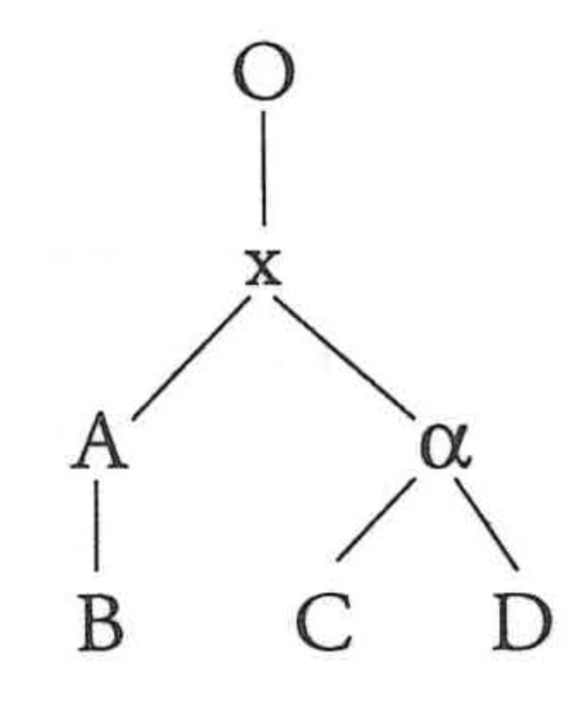
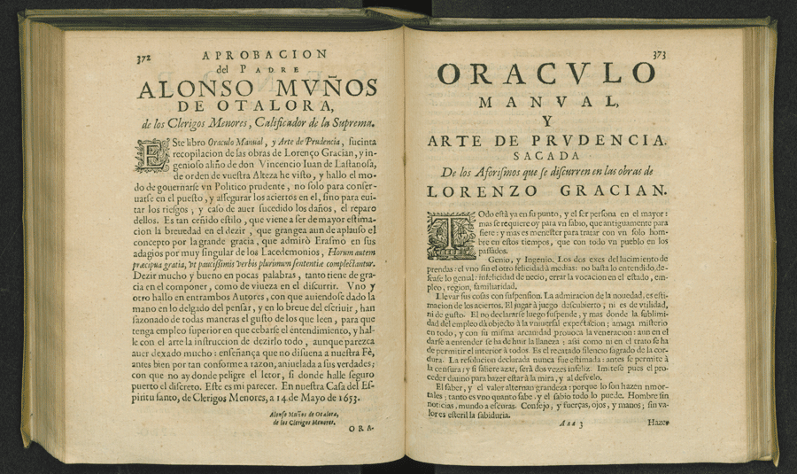
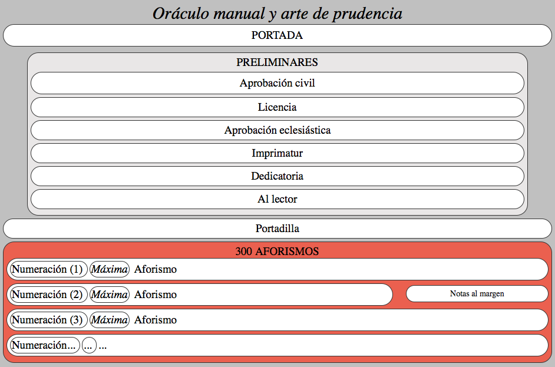
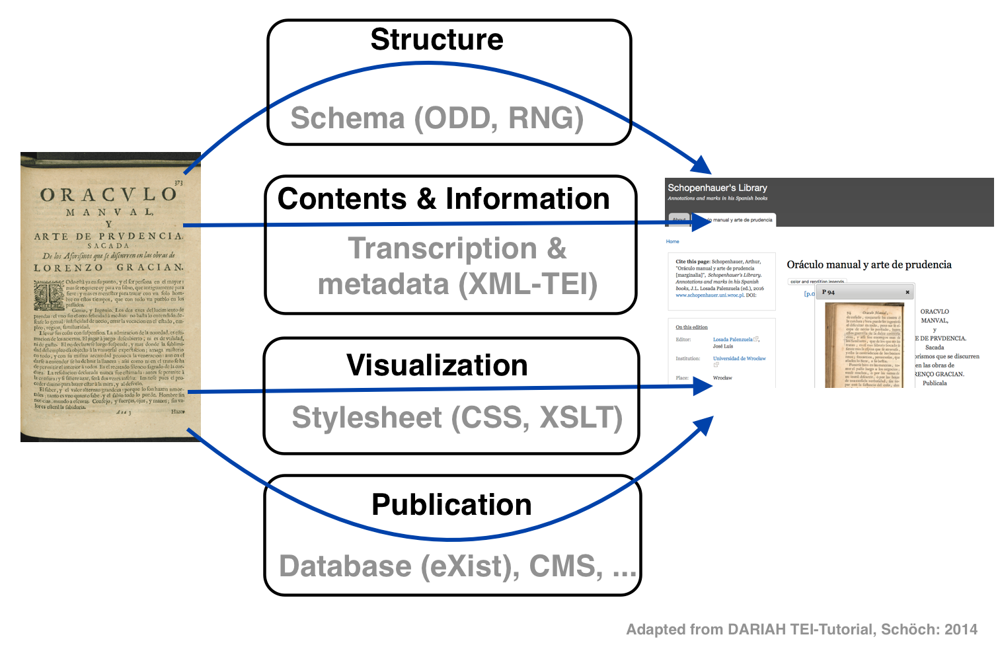

Introduction to digital editions. Annotating texts with XML-TEI
José Luis Losada Palenzuela
Universität Basel (RISE)

Image from The Bodleian First Folio: Bodleian Arch. G c.7. URL: http://firstfolio.bodleian.ox.ac.uk
Lachmann’s method
(German tradition)

example of stemma (Pérez 1997: 97)
- reconstructing the (original) text based on different witnesses
- witnesses are grouped hierarchically in order to compile a genealogical tree (stemma)
- genealogical tree is based on typology of errors
- Dogmatism
Bon manuscrit
(French tradition)
- Joseph Bédier's scepticism on stemmatics;
- Edition based on the earliest or best preserved manuscript (codex optimus);
- Historical & cultural analysis of the text tradition.
Copy-text theory
(Anglo-American tradition)
- Printed edition closest to the author’s intention;
- Autograph manuscript and printed edition (combined).
Methods related to type of documents
- stemmatics: medieval and classical texts preserved in manuscripts;
- copy-text: modern print materials;
- genetics: authorial drafts and contemporary authors (edition ≃ genetic dossier).
Pierazzo 2015: 17 and Lexicon of Scholarly Editing
Digital Editing
A digital edition follows the requirements of a scholarly edition in consideration of the digital paradigm
"Eine digitale Edition ist dadurch bestimmt, dass sie die allgemeinen Anforderungen an eine wissenschaftliche Edition durch die Berücksichtigung der gegenwärtigen technischen Möglichkeiten und ihrer methodischen Implikationen erfüllt. Sie folgt einem «digitalen Paradigma»"
(Sahle 2016/2: 148)
Digital scholarly editions are not just scholarly editions in digital media:
digital ≠ digitized
"Wiedergabe ohne Erschließung ist keine Edition. Eine bloße Reproduktion, ein einfaches Faksimile, eine digitale Bibliothek ist keine Edition"
"Deshalb kann eine digitale Edition nicht einfach die digitale Fassung einer auch im Druck realisierbaren Edition sein – zu ihrem Wesen gehört, dass sie über die Beschränkungen der typografischen Edition hinweggeht"
(Sahle 2016/2: 141-142; 149)
Reference model for digital editing

"The Role of Markup in the Digital Humanities", Desmond Schmidt, Queensland University of Technology, 2012
Document ⤑ Digital Edition

Christof Schöch: Digitale Textedition mit TEI. DARIAH TEI-Tutorial
Analysis
- to set document properties
- implicit → explicit
- structured (but not standardized)
- (possibly) digital (but not machine-readable)
- abstract und simplified
Outcome: a representation...

B. Gracián, Obras Completas, Amberes, 1669. BUWr

A structured representation of a document (Gracian's Oraculo manual y arte de prudencia)
Modelling
- to set a formal model of the document.
- Standard: XML-Schema.
- Tool: Roma (webservice).
- structured and standardized.
- digital and machine-readable.
- without content (yet).
- useful for guiding encoding and visualization.
Technologies:
Outcome: a representation...
Schema RNG (snippets)
Paragraph
marks paragraphs in prose. Page break
marks the start of a new page in a paginated document. Quotation
contains a phrase or passage attributed by the narrator or author to some agency external to the text. (manual) Transcription
- to set the text in a linear form.
- Format: .txt, .doc, .odt, ...
- Tool: text editor...
- digital and machine-readable.
- limited complexity and precision.
- less structured.
- not standardized.
Technologies:
Outcome: a text representation...
(automatic) Transcription
- to set the text in a linear form.
- OCR, HCR
- Tool: Transkribus,Tesseract,...
- digital and machine-readable.
- some complexity and precision.
- structured / not structured.
- standardized / not standardized
Technologies:
Outcome: a text representation...
Encoding
- to improve the transcript
- Standards: XML-TEI
- Tool: XML-Editor (oXygen, ...)
- digital and machine-readable (not so human-readable).
- structured and standardized
- the core of a digital edition
Technologies:
Outcome: a text representation...
Visualizing
- to represent for a reader
- Standards: CSS, XSLT, X-Path, XML-FO
- Formats: HTML, PDF, ePub
- out of a TEI source file
Technologies:
Outcome: different visualizations...
Publishing
- to be available for the public
- to set the text in the editorial context
- to interact with the edition
- Databases: eXist (XML)
- EVT Viewer, Omeka, TEI-Publisher..
- Tailor-made projects
Technologies
Summary

References
- Burnard, Lou (2014): What is the Text Encoding Initiative?: How to add intelligent markup to digital resources, Marseille, OpenEdition Press, https://doi.org/10.4000/books.oep.426.
- Elena Pierazzo (2015), Digital Scholarly Editing: Theories, Models and Methods, Ashgate Publishing
- Patrick Sahle (2013), Digitale Editionsformen, Zum Umgang mit der Überlieferung unter den Bedingungen des Medienwandels, 3 Bände, Norderstedt: Books on Demand.
- Christof Schöch (2014), Digitale Textedition mit TEI, DARIAH TEI-Tutorial.